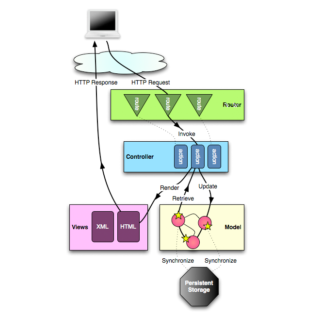
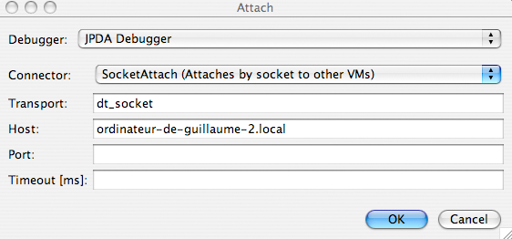

The main concepts
The MVC application model
A Play application follows the MVC architectural pattern applied to the web architecture.
This pattern splits the application into separate layers: the Presentation layer and the Model layer. The Presentation layer is further split into a View and a Controller layer.
- The Model is the domain-specific representation of the information on which the application operates. Domain logic adds ‘meaning’ to raw data (e.g., calculating if today is the user’s birthday, or the totals, taxes, and shipping charges for a shopping cart). Most applications use a persistent storage mechanism such as a database to store data. MVC does not specifically mention the data access layer because it is understood to be underneath, or encapsulated by, the Model.
- The View renders the model into a form suitable for interactions, typically a user interface. Multiple views can exist for a single model, for different purposes. In a Web application the view is usually rendered in a ‘web format’ like HTML, XML or JSON. However there are some cases where the view can be expressed in a binary form, e.g. dynamically rendered chart diagrams.
- The Controller responds to events (typically user actions) and processes them, and may also invoke changes on the model. In a Web application, events are typically HTTP requests: a Controller listens for HTTP requests, extracts relevant data from the ‘event’, such as query string parameters, request headers… and applies changes to the underlying model objects.
In a Play application these three layers are defined in the app directory, each one in a separate Java package.
app/controllers
A Controller is a Java class where each public, static, method is an action. An action is a Java entry point invoked when an HTTP Request is received. The Java code from the Controller class isn’t really object oriented: it’s mainly procedural code. The action method extracts relevant data from the HTTP Request, reads or updates the model objects, and sends back a result which is wrapped into an HTTP Response.
app/models
The domain model object layer is a set of Java classes using all the object-oriented features available from the Java language. It contains data structures and operations on which the application operates. Whenever model objects need to be saved to persistent storage, they may contain some glue artifacts like JPA annotations or SQL statements.
app/views
Most of the application views are generated using an efficient templating system provided by Play. The Controller gets some interesting data from the model layer, and then applies a template to decorate these objects. This package contains HTML, XML, JSON or other template files with special directives used to dynamically generate the model representation.
The request life cycle
The Play framework is fully stateless and only request/response-oriented. All HTTP Requests follow the same path:
- An HTTP Request is received by the framework.
- The Router component tries to find the most specific route able to accept this request. The corresponding action method is then invoked.
- The application code is executed.
- If a complex view needs to be generated, a template file is rendered.
- The result of the action method (HTTP Response code, Content) is then written as an HTTP Response.
The following diagram summarizes the HTTP Request path:

The standard application layout
The layout of a Play application is standardized to keep things as simple as possible.
The app directory
This directory contains all executable artifacts: Java source code and view templates.
Where are my .class files?
Don’t look for compiled Java classes. The framework compiles the Java source code at runtime and only keeps compiled classes in a bytecode cache under the tmp directory. The main executable artifacts in a Play application are the .java source files, not the compiled classes.
There are three standard packages in the app directory, one for each layer of the MVC architectural pattern. You can of course add your own packages like for example a utils package.
In addition, the views package is further organized into sub-packages:
tags, hosts application tags, e.g. reusable pieces of templates.- one
viewsfolder for each controller – by convention templates related to each controller are stored in their own sub-package.
The public directory
Resources stored in the public directory are static assets and are served directly by the Web server.
This directory is split into three standard sub-directories: for images, CSS stylesheets and JavaScript files. You should try to organize your static assets like this to keep all Play applications consistent.
By default the /public directory is mapped to the /public URL path, but you can easily change that, or even use several directories for your static assets.
The conf directory
The conf directory contains all configuration files for the application.
There are two required configuration files:
application.conf, the main configuration file for the application. It contains standard configuration parameters.routes, the routes definition file.
If you need to add some configuration options specific to your application, it’s a good idea to add more options to the application.conf file. Configuration options in this file are read programmatically with Play.configuration.get("propertyName"). When you create a new application, the play new command copies a default configuration file from the $PLAY_HOME/resources/application-skel/conf directory with some commented-out options to get you started.
If any library needs a specific configuration file, try to file it under the conf directory: this directory is included in the Java ClassPath.
You can add additional configuration files to the Play configuration by specifying a file name in application.conf as the value of a configuration option with @include. at the start of the key.
This is an experimental feature that does not yet work properly. In particular, placeholders and framework IDs are not handled properly.
For example, if you define additional MIME types in a conf/mime-types.conf
# Web fonts
mimetype.eot = application/vnd.ms-fontobject
mimetype.otf = application/octet-stream
mimetype.ttf = application/octet-stream
mimetype.woff = application/x-font-woff
you can include them by adding the following line to application.conf:
@include.mime = mime-types.conf
The lib directory
This directory contains all standard Java libraries needed by your application. They are automatically added to the Java classpath.
Development life cycle
There are no compilation, packaging or deployment phases while working with Play. However Play implements two distinct environments: DEV mode during the development phase and PROD mode when the application is deployed.
About DEV/PROD modes
You can run an application either in a DEV or PROD mode. You toggle this mode using the application.mode configuration. When run in DEV mode, Play will check for file changes and will handle hot reloading if necessary.
The PROD mode is fully optimized for production: Java sources and templates are compiled once and cached for multiple uses.
Java source code is compiled and loaded at runtime. If a Java source file is modified while the application is running, the source code is recompiled and hot-swapped into the JVM.
If a compilation error occurs, the exact problem is displayed in the browser (in DEV mode only).
Template files are hot-compiled and hot-reloaded too.
Connect a Java debugger
When you run the application in DEV mode, you can connect a Java debugger to the port 8000.
For example, using the NetBeans debugger:

Class enhancement
A Play plug-in (i.e. a subclass of play.PlayPlugin) may include ‘enhancers’ that modify application classes at runtime, to add functionality. This is how some of Play’s magic works.
The built-in play.CorePlugin uses enhancers from the play.classloading.enhancers package to dynamically add code to your application’s classes:
ContinuationEnhancer- adds continuations support to controller classesControllersEnhancer- makes controller action methods thread-safe and adds HTTP redirects for method callsLocalvariablesNamesEnhancer- tracks local variable names in controllersMailerEnhancer- sets-upplay.mvc.MailersubclassesPropertiesEnhancer- turns all application classes into valid JavaBeans, with properties based on fieldsSigEnhancer- computes a unique hash for each class’ signature, to enable automatic reloading.
In addition, the play.db.jpa.JPAPlugin enhances subclasses of play.db.jpa.JPABase with implementations of the convenience methods for JPA queries. This normally applies to your application’s model classes that subclass play.db.jpa.Model. The JPA queries in question are those defined in play.db.jpa.GenericModel.
To add your own enhancer, use a subclass of play.classloading.enhancers.Enhancer in your plug-in’s enhance(ApplicationClass) method.
Continuing the discussion
Now that you’ve seen what a Play application is, let’s see how HTTP routing works. The Router is in charge of translating incoming HTTP Requests into actions.